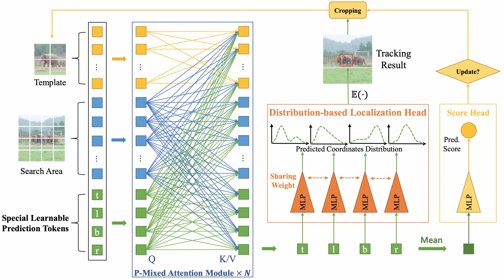

SPLAM: Accelerating Image Generation with Sub-Path Linear Approximation Model
C. Xu, T. Song, W. Feng, X. Li, T. Ge, B. Zheng, L. Wang
in European Conference on Computer Vision (ECCV), 2024. (Oral)
[ Paper ] [ Code ]

MixFormerV2: Efficient Fully Transformer Tracking
Y. Cui, T. Song, G. Wu, L. Wang
in Conference on Neural Information Processing Systems (NeurIPS), 2023.
[ Paper ] [ Code ]